|
Welcome dear youngster to the best Thrillville website in the
universe!
Ok, enough of this. No, this contains no information about Thrillville
at all (well, actually there is, but you will have to read all
this first to get it). Here you will learn the TRUTH!
The TRUTH about LucasArts, so... pop some corn, get a tasty beverage
and make yourself comfortable because here it goes:
WHAT IS THRILLVILLE?
By Sam
A long time ago,
in a galaxy which I hope it's the same...
There was a company called LucasFilm Games, which later evolved
into LucasArts. In the days of yore, this company did a whole
lot more than StarWars games.
Back then they had a lot of... original adventure games! Oh yes,
beautiful pieces of games. What was so special about them? Simple.
They were good stories. They didn't care about technology, next-gen
platforms, polygons and stuff like that. Why? Simple. Because
none of those thing make a great game on it's own, just the same
way awesome special effects don't make great movies on it's own.
They cared about good stories and fun interactivity. That's all
that matters on story-driven games.
Sadly, at the dawn of the new millennium they progressively stopped
making those games, and focused on making games that rarely had
something special in them.
So, young player, do you want to know what does games were about?
Take a look at this!
|
|
|
Sam says:
When the company was first called LucasFilm games, Brian
Moriarty created this neat fantasy adventure game. An ancient
(or futuristic) story about a guild of magicians that can
weave music in order to achieve magic. The end of existence
played with a LucasFilm spark in it. Magical.
LucasArts
says:
While some might assume that all of LucasArts' adventure
games in the early 1990s were humorous, that's not actually
the case. Loom, released in 1990, was a serious and thought-provoking
fantasy adventure. Players assumed the role of Bobbin Threadbare,
a 17-year-old boy in the Guild of Weavers. But instead of
weaving thread, Bobbin used a staff to weave magical music
that helped him challenge a darkness that had overcome the
land. The player casts magic spells by using notes on the
standard musical C major scale. On lower difficulty settings,
it was not necessary to know how to read or write music
to successfully complete the game. Many players fondly remember
the beautiful classical music in the game, not to mention
Bobbin's epic journey to destroy darkness.
Reviews:
"A showcase of pretty pictures" - MobyGames
"An instant classic" - Adventure Classic
Gaming
"One of the best adventure games ever made"
- Mr. Bill's Adventureland
Learn More:
At Wikipedia
This site
Buy
here
Demo
|
|
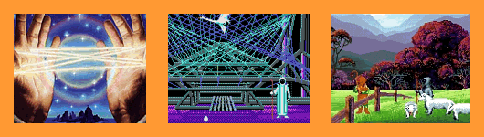
|
|
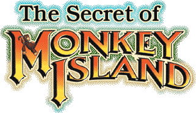
|
|
Sam says:
How to describe this piece of perfection in a few lines?
I think it's not possible with existing human languages,
so I will have to use a new one.
Doromoto tromo lomo iopo folo toro roto eropo loso LECHUCK.
LucasArts
says:
Another young man would begin his own epic journey in October
1990. Guybrush Threepwood was a pirate-wannabe who starred
in his own comedy adventure, The Secret of Monkey Island.
Set on Melee Island in the Caribbean, Guybrush battled against
the evil ghost pirate LeChuck who had captured the beautiful
governor of the island, Elaine Marley. During the game,
Guybrush had to complete three trials to become a pirate:
thievery, verbal insult sword fighting, and treasure hunting.
Most of the fun in the game came from the branching dialog
trees, where players had the chance to select how they conversed
with in-game characters.
Reviews:
"A first class adventure" - Adventure Classic
Gaming
"Funny and totally captivating even after a good
few years" - Quandary
"This game had a lot of laughs" - Four
Fat Chicks
Learn More:
At
Wikipedia
This
site
Buy
here
Demo
Note: The main sequels of the game: Monkey Island 2:
LeChuck's Revenge and The Curse Of Monkey Island
have not been covered here, but they are both brilliant
and highly recommendable. There is also a fourth one (Escape
From Monkey Island) but since I haven't played it I assume
that you won't be interested in it either.
|
|
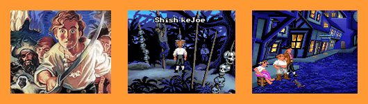
|
|
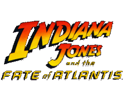
|
|
Sam says:
The most original Indiana Jones game ever. Possibly the
best movie-turned-into-adventure game. You will really feel
the adventure in this mystery packed journey. Very fun,
clever and interesting game.
LucasArts
says:
While Lucasfilm Games had published an Indiana Jones game
in 1989 to coincide with the film Indiana Jones and the
Last Crusade, 1993 brought the release of the first original
Indiana Jones game. The plot for Indiana Jones and the Fate
of Atlantis was completely new. It told the tale of how
Indiana and his cohort Sophia raced to find Atlantis before
the Third Reich could use the Lost City's power for evil.
Besides including LucasArts' trademark witty dialogue and
interesting puzzles, Fate of Atlantis featured multiple
ways to complete the game. Part way through the adventure,
players selected between three paths: the more action-oriented
FISTS path; the intellectually stimulating WITS path; or
the TEAM path where Sophia would offer Indy hints during
their adventure. The game also came out as a “talkie”
CD-ROM with more than 8,000 lines of dialogue.
Reviews:
"A great story, enticing atmosphere, and addictive
gameplay" - Adventure Classic Gaming
"Eminently enjoyable" - Quandary
"A breath of fresh air" - Mr. Bill's Adventureland
Learn More:
At
Wikipedia
This
site
Buy
here
Demo
|
|
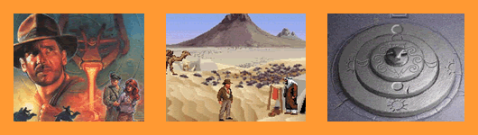
|
|
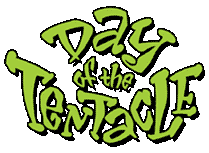
|
|
Sam says:
Funny all the way to the end. A fantastic game, as insane
as a manatee. The Rocky Horror Show of adventure games.
LucasArts
says:
In 1993, the designers at LucasArts decided to bring back
one of their classics from the 1980s. Day of the Tentacle
was a sequel to Maniac Mansion, although it featured a completely
new plot and many new characters. The game shipped simultaneously
as a “talkie” CD-ROM and on floppy disk. In this
humorous adventure, players took control of three characters:
Bernard, a loveable computer geek; Laverne, a sleep deprived
medical student; and Hoagie, a brain-dead rock roadie. These
characters were brought together to prevent Dr. Fred's Purple
Tentacle from taking over the world. Using a Chron-O-John
time machine, made out of three port-o-potties and a VW
Bug, characters passed objects back and forth through time.
Reviews:
"It's pretty much great" - Adventure Gamers
"It’s hard to find something bad to say about
Tentacle" - The Armchair Empire
"A wonderfully entertaining ride" -Quandary
Learn More:
At
Wikipedia
This
site
Buy
here
Demo
|
|
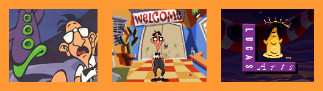
|
|
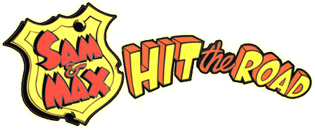
|
|
Sam says:
If we could imagine a sort of Libra balance, the right side
will be very high contain a couple of particles of MENTAL
COHERENCE. While the left side will be heavily tight on
the ground containing LOADS OF FUN.
LucasArts
says:
“Caution: Naked Bunny with Attitude” was the sticker
on the box to Sam & Max Hit the Road, the final classic
LucasArts adventure from the early 1990s. In this game,
players controlled two freelance police detectives: Sam,
a canine, and Max, his hyperactive rabbit partner. This
odd couple traveled throughout America on the trail of a
runaway carnival bigfoot named Bruno. Locations in the game
included The World's Largest Ball of Twine and The Mount
Rushmore Dinosaur Tarpit. There also were action sequences
such as the famous Wak-A-Rat™ game.
Reviews:
"One of the funniest games that we've ever played!"
- Mr.Bill's Adventureland
"There are loads of mini-games" - MobyGames
"The humor still keeps surprising me" -
Adventure Gamers
Learn More:
At
Wikipedia
This site
Buy
here
Demo
|
|
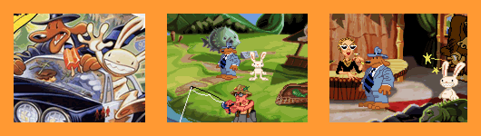
|
|
|
|
Sam says:
Ever wanted to be COOL? Playing Full Throttle is a guaranteed
ride to COOLNESS. So... do you want to be COOL?
LucasArts
says:
In Full Throttle, another one of LucasArts' classic “talkie”
CD-ROM adventures, players assumed the role of Ben, a biker
framed for the murder of Malcolm Corley, head of Corley
Motors. As the adventure begins, players begin a quest to
clear Ben's name by finding the real killer. In addition
to regular adventure game sequences, Full Throttle was notable
for its first-person motorcycle action elements, where Ben
battled rival bikers on winding canyon roads. Full Throttle,
known for its outstanding voice acting, featured the voice
of Mark Hamill (Luke Skywalker) as the menacing villain
Ripburger.
Reviews:
"Arguably LucasArts' finest graphic adventure creation"
- GameSpot
"The main characters are perfectly drawn"
- Mr. Bill's Adventureland
"I really enjoyed being a bad boy" - Four
Fat Chicks
Learn More:
At
Wikipedia
This
site
Buy
here
Demo
|
|
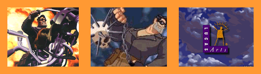
|
|
|
|
Sam says:
Following the tradition of Loom here it is another serious
game. A story of discovery and loneliness. A mystery shouting
to be revealed. A pig shouting to be free.
LucasArts
says:
When a mysterious asteroid suddenly appears in an unstable
orbit around earth, it's up to the player and a team of
NASA astronauts to neutralize the threat in The Dig. This
adventure game, based on a story written by Steven Spielberg
for his Amazing Stories TV series, immersed players in the
role of Boston Low. Low was an astronaut voiced by actor
Robert Patrick, who is perhaps best known for playing Arnold
Schwarzenegger's rival in Terminator 2. The ensuing adventure
featured more than 200 locations and a storyline that lived
up to the game's tagline: “In the Dead of Space, Something
is Alive”.
Reviews:
"One of the finest games ever made" - Four
Fat Chicks
"The Dig is a masterpiece" - Gameology
"The Dig is an excellent adventure game"
- Quandary
Learn More:
At Wikipedia
This site
Buy
here
Demo
|
|
|
|
|
|
Sam says:
A game that creates a perfect balance between humor and
seriousness. A delightful story packed with charming characters.
Beautiful.
LucasArts
says:
A dramatic and mythical story of crime and corruption set
the stage for Grim Fandango, a film noir-inspired adventure
game that chronicled the story of Manny Calavera, a travel
agent in the Land of the Dead. Working for the Department
of Death, Manny's job was to pick up people in the Land
of the Living and bring them to the Land of the Dead for
a four-year journey across the underworld. But Manny has
a big problem: He can't meet his sales quota because he's
not getting any good clients. Soon, Manny discovers a conspiracy
is afoot, and the real adventure begins. Grim Fandango was
heralded for its incredible visual style inspired by Mexican
folklore, not to mention its engaging story with 55 characters
and 7,000 lines of dialogue. The game's interface also was
unique, as players used their keyboards - instead of a mouse
- to move a 3D rendition of Manny around the game environment.
Reviews:
"Don't be surprised if you're sad when it's over"
- GameSpot
"Grim Fandango is hands down the best adventure
game we've ever seen" - IGN
"Five stars! It's got it all! It's epic!"
- Four Fat Chicks
Learn More:
At
Wikipedia
This
site
Buy
here
Demo
|
|
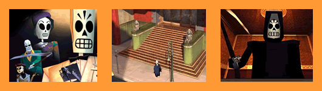
|
Grim Fandango
represents the last really original LucasArts game (by really original
I mean a completely new story. And yes, I know there was also Mercenaries...but
I don't think it was as creatively good as GF) and that happened
in 1998.
Fortunately since that time to present we have had other designers
and companies outside LucasArts make some great games.
Let's take a quick look at some of those games that are related
more or less with LucasArts at some extent:
|
PSYCHONAUTS
|
|
Sam says:
One absolutely awesome game I haven't played yet. But I
could bet my weird coin collection on it's EXCELLENCE. It's
not a plain adventure game, it's actually an action/adventure,
or platformer. A MUST.
It was also the winner of the 2006 BAFTA Award for Best
Game Screenplay.
LucasArts
relation :
Written and Directed by Tim Schafer (Day of The Tentacle,
Full Throttle, Grim Fandango)
Developed by the creators of Grim Fandango.
Reviews:
"...truly eye-catching visual style ...quite impressive
...richly detailed..." - GameSpot
"Psychonauts takes the established 3D platformer
genre to bold new levels" - GameSpy
"If only games like this came along more often"
- Insider Gamer Online
Learn More:
At Wikipedia
This site
Buy
here
Demo
|
|
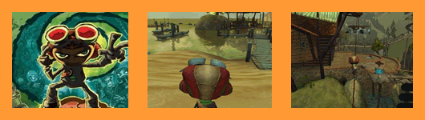
|
|
7
DAYS A SKEPTIC
|
|
Sam says:
Rather impressive amateur game, I just have started it and
was quite surprised by it. It's made by just one guy (Yahtzee).
This game it's the sequel to 5
Days a Stranger which I recommend you play first (for
FREE). I just selected this one because it looks better
(and also discovered it first). It's definitely not for
young kids (as it contains much blood).
LucasArts
relation :
Not real straightforward relation with LucasArts, except
that it seems the creator of this game has actually played
a few of the LucasArts golden classics. And perhaps he had
some inspiration from games like The Dig or even Loom.
Reviews:
"7 Days a Skeptic is bound to successful"
- Adventure Gamers
"Well made story and a good atmosphere"
- Gaming World
"Remains true to its prequel and retains the same
level of seriousness" - Adventure Lantern
Learn More:
At
Wikipedia
This site
Download
Here for FREE
|
|
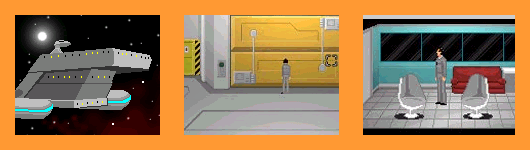
|
|
SAM
& MAX: Culture Shock
|
|
Sam says:
I haven't played this one either but still, I bet my socks
collection that this game ROCKS! The Sam & Max games
are now beign developed by Telltale Games.
LucasArts
relation :
Project leader, Dave Grossman (Monkey Island 1 and 2, Day
of The Tentacle)
Much of the guys working at Telltale were former LucasArts
employees.
A few years ago LucasArts was developing another Sam &
Max game but then suddenly cancelled it. This was one of
the saddest things LucasArts ever did.
Reviews:
"The perfect choice to revisit those fun days of
PC gaming past" - The Armchair Empire
"Culture Shock speaks of good days to come"
- Slashdot
"Nothing less than a complete blast of fun"
- Adventure Gamers
Learn More:
At
Wikipedia
This
site
Buy
here
Demo
|
|
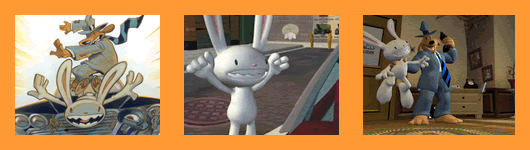
|
|
INDIANA
JONES and The Fountain of Youth
|
|
Sam says:
This fan sequel to Indiana Jones and The Fate of Atlantis
looks even better than the one made by LucasArts!! It's
just awesome what this team of crazy people has achieved.
Unfortunately the game is not yet complete, the good news
is that it will be free. And you can try the demo. The backgrounds
are just beautiful.
LucasArts
relation :
Well, a somewhat illegal (but somehow nonprofit also) game
inspired by LucasArts' creation.
Reviews:
To be released.
Learn More:
This site
Demo
|
|
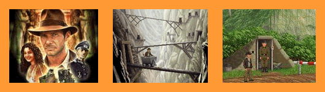
|
So, having reviewed
all this lovely games we shall now discuss a few topics.
Unfortunately since LucasArts started to take less and less smart
creative decisions most of the great designers they had eventually
left the company (fortunately most of them keep trying to make
good games).
I believe that at the end of this dark tunnel filled with endless
Star Wars games there is very thin thin so thin light of hope.
This very thin line is divided in two factors that could eventually
make THE DIFFERENCE.
A) What you wanted to know..... What is Thrillville? Well,
Thrillville represents the first original (not based on an existing
franchise) LucasArts game in a long time. Personally, I don't
think it's a great game (I haven't played, but I researched it)
and I think it's not the worst game ever either. Anyway, it makes
me somewhat happy to see that LucasArts did something that is
not Star Wars or Indiana Jones.
B) Is the hope that the people, the gamers can make ALL
the difference. If everybody starts buying and playing games like
Psychonauts and old 2D games, then inevitably the game companies
are going to start making more and more of those games, and less
and less the same uncreative first person shooters. And then more
and more creative people will start getting interest in the game
industry. And then start working on games. And then the utopia
comes true.
I Want To Change LucasArts, WHAT CAN I DO?
You can do
a couple of things.
You can write a letter to LucasArts president, Mr. Jim
Ward, and let him know that you love the old LucasArts classics
and that you would like LucasArts to make more of those games.
Write to: (Please Be polite. And if you want... you can include
a friendly "Come on Jim. Join the Joy Ride!")
LucasArts - Jim Ward
P.O. Box 29908
San Francisco, CA 94129-0908
You can send an email to the LucasArts Public Relations
department and also request new and creative games, just like
they used to do. Send it here: pr@lucasarts.com
You can buy the only two remaining original games from
LucasArts store. Escape
From Monkey Island and Thrillville.
If this games sell more than Star Wars game they will notice it
and do something about it.
You can send an email to the LucasArts Store, and tell
them you would like them to put in the store the really good adventure
classics back in the virtual shelves. Send it here: store@lucasarts.com
You can
speak to the man itself. The person responsible for the "Lucas"
in "LucasArts", of course, I'm talking about Mr. George
Lucas. Despite he is not involved in making the games, his name
is on every single one of them, and he certainly can have a voice
on who is to run the company or what direction should it take.
Write him a letter to let him know how much you loved the old
games and how badly you want LucasArts to make good and fresh
stories again.
Write to: (Try to keep the worshipping and the thanking for Star
Wars to no more than a couple of lines. I'm sure he gets more
mail on that subject than an average person gets on ANY subject
in 5 years)
George Lucas
P.O. Box 29901,
San Francisco, CA 94129.
Sam's Public Services
I will also like to contribute to the cause, offering (during
2007, at least) the following public services:
You can email me if...
- You want assistance with any of the above games. If you have
technical problems with them I promise to at least find where
you have to address your problem. If you got stuck in one of them
I will give you hints or solutions for that specific part (If
I haven't played it, I will try to look for it, or at least provide
a guide)
- You are interested in good creative games, but not really into
adventure games. I can recommend to you games of different genres
that I have either played and know they are good, or games I "feel"
are good. I will also provide official sites, buying links and
demo links for any of these.
- You want to change the game industry beyond LucasArts. I can
provide with a couple of ideas on how could you contribute to
make it better.
- You simply want to chat a little bit about good games.
Reach me at the email address located at the top of my Journal.
Thrillville Goodies
Ok, ok, to not
let down those go came here looking for some Thrillville goodies,
here you will them...FINALLY. But....you've got to agree with
the following to get them:
I promise
on my mother's life that I've read all of the information provided
above.
|